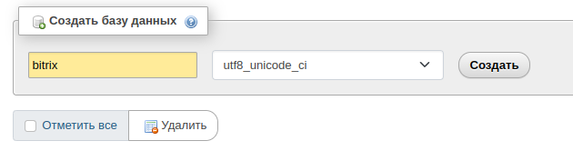
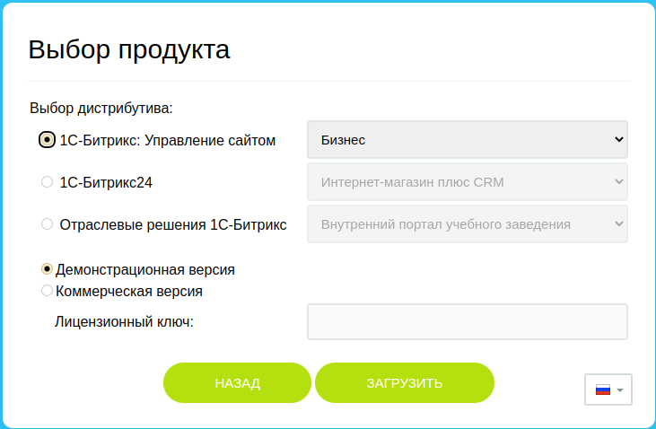

Создаем каталог ~/my_web_pages и копируем в него файл bitrixsetup.php
$ mkdir my_web_pages
$ cd ./my_web_pages
$ sudo wget https://www.1c-bitrix.ru/download/files/scripts/bitrixsetup.php
Настраиваем репозиторий для установки Docker
https://docs.docker.com/engine/install/ubuntu/#set-up-the-repository
$ sudo apt-get update
$ sudo apt-get install ca-certificates curl gnupg
sudo install -m 0755 -d /etc/apt/keyrings
curl -fsSL https://download.docker.com/linux/ubuntu/gpg | sudo gpg --dearmor -o /etc/apt/keyrings/docker.gpg
sudo chmod a+r /etc/apt/keyrings/docker.gpg
echo \
"deb [arch="$(dpkg --print-architecture)" signed-by=/etc/apt/keyrings/docker.gpg] https://download.docker.com/linux/ubuntu \
"$(. /etc/os-release && echo "$VERSION_CODENAME")" stable" | \
sudo tee /etc/apt/sources.list.d/docker.list > /dev/null
sudo apt-get update
Устанавливаем Docker engine
https://docs.docker.com/engine/install/ubuntu/#install-docker-engine
sudo apt-get install docker-ce docker-ce-cli containerd.io docker-buildx-plugin docker-compose-plugin
Загружаем образ с Docker Hub и запускаем контейнер
sudo docker run --name myXampp -p 41061:22 -p 41062:80 -d -v ~/my_web_pages:/www tomsik68/xampp:8
docker run: команда используется для создания и запуска контейнера Docker.
--name myXampp: флаг задает имя для контейнера.
-p 41061:22: флаг устанавливает проброс портов между хостом и контейнером.
Перенаправляет порт 22 (SSH) с хоста на порт 41061 контейнера.
-p 41062:80: флаг устанавливает проброс портов, перенаправляя порт 80 (HTTP) с хоста на порт 41062 контейнера.
-d: флаг указывает Docker запустить контейнер в фоновом режиме (демон).
-v ~/my_web_pages:/www: флаг создает связь между локальной директорией ~/my_web_pages и директорией /www внутри контейнера. Позволяет размещать файлы в ~/my_web_pages на хосте и видеть их внутри контейнера XAMPP в директории /www.
tomsik68/xampp:8: имя образа Docker.
Подключаемся к контейнеру (password: root)
переходим в каталог проекта
меняем параметры short_open_tag и max_input_vars в etc/php.ini
ssh root@localhost -p 41061
root@fa2c81bbfde3 cd /opt/lampp
root@fa2c81bbfde3:/opt/lampp nano etc/php.ini
(short_open_tag=On; max_input_vars=10000)
Перезагружаем сервер
sudo docker exec myXampp /opt/lampp/lampp restart
даем права на запись при установке bitrix
root@fa2c81bbfde3:/opt/lampp chmod -R 777 htdocs
в браузере открываем http://localhost:41062/phpmyadmin и создаем базу данных
в браузере открываем http://localhost:41062/www/bitrixsetup.php и устанавливаем bitrix
